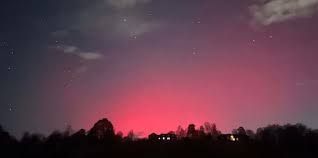

DAILY NEWS ABOUT SPACE
SPACE EXPLORATION
LATEST NEWS

Aurora forecast for Dec. 24 - Fast solar winds keep aurora activity possible this Christmas
Our aurora forecast live blog tells you everything you need to know about the likelihood of seeing the northern lights tonight and for the days ahead.
We'll also report on relevant solar activity and significant space weather events such as coronal mass ejections (CMEs) and coronal holes which could bring strong aurora-sparking solar winds our way.
REMEMBER: The Kp index is important, with a higher Kp indicating stronger auroral activity. A key ingredient of aurora activity is the Bz value of the Interplanetary Magnetic Field, which can be easily viewed on SpaceWeatherLive.com. You're ideally looking for a strong "south" Bz which means it will connect with Earth's magnetosphere which points northward. A strong southward Bz can wreak havoc with Earth's magnetic field and send particles raining down through the atmosphere along magnetic field lines. When these energized particles collide with atoms in Earth's atmosphere they release the light we see as auroras. If there is a strong southward Bz, your chances of seeing auroras increase significantly.
SPACE PICTURE OF THE DAY